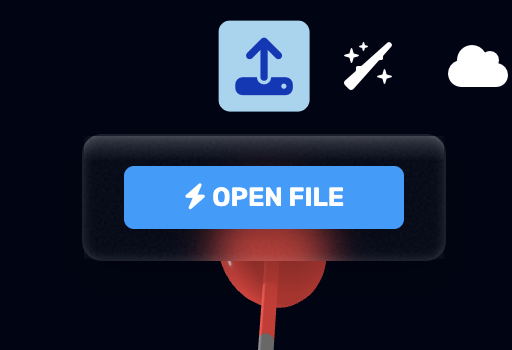
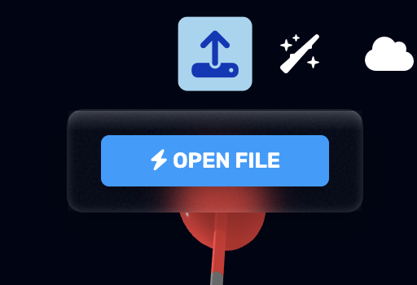
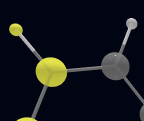
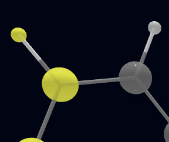
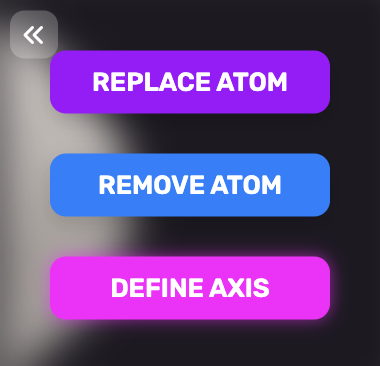
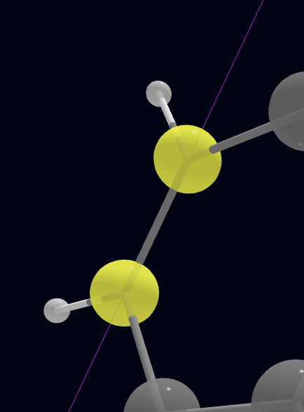
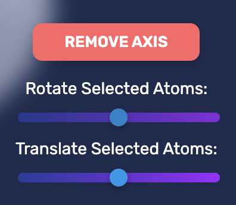
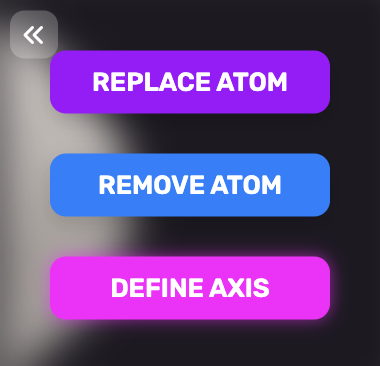
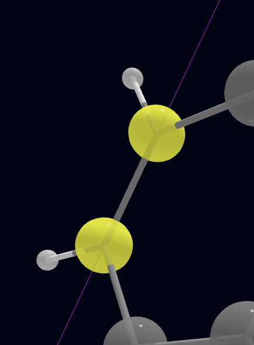
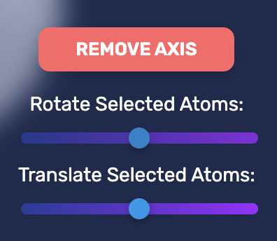

Main Features
Opening files
In ChopChopMol, there are multiple ways to open a file. It supports the XYZ, MOL2, and PDB file format
as of now. You can navigate to the upload dropdown and select "Open
File", or you can simply drag and drop a file into the page.


Selecting Atoms
You can select a single atom by clicking on it, or select multiple atoms by cmd/ctrl and clicking on
multiple atoms. You can also use the box tool by holding cmd/ctrl and dragging to create a box and
select anything in its borders. When you select an atom, it will be highlighted in yellow.


Using Axis tool
First, select 2 atoms in the molecule. You can create an axis in 2 ways:
 
After creating an axis, you can perform actions with it such as rotation, or translation reletive to the axis. You can rotate any selected atoms around the axis by using the slider, or by holding shift and scrolling with the mouse. You can also translate the selected atoms relative to the axis by using the slider, or by holding shift and dragging the mouse.

- Click on the "Create Axis" button
- Press the space bar
 
After creating an axis, you can perform actions with it such as rotation, or translation reletive to the axis. You can rotate any selected atoms around the axis by using the slider, or by holding shift and scrolling with the mouse. You can also translate the selected atoms relative to the axis by using the slider, or by holding shift and dragging the mouse.

Can I cancel anytime?
Yes! You can cancel your subscription at any time. You'll continue to have access to premium features
until the end of your billing period.

What payment methods do you accept?
We accept all major credit cards, debit cards, and digital wallets through our secure payment processor,
Stripe.
Is my data secure?
Absolutely! We use industry-standard encryption and security practices. Your molecules and personal data
are stored securely in the cloud with automatic backups.
Do I need to sign in to use premium features?
Yes, you need to sign in with Google to access premium features and maintain your subscription. This
allows us to sync your data across devices.